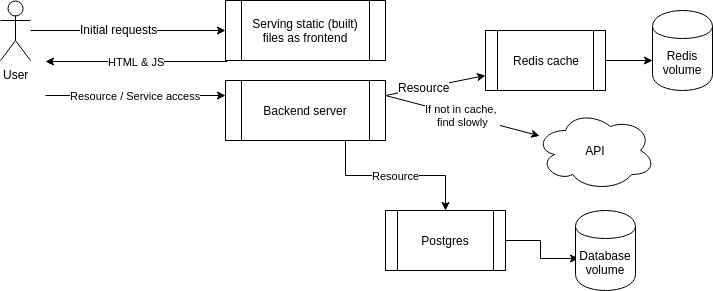

Exercises
Passing
To get a passing grade you have to do every exercise, except you can skip one exercise for each part. You can not “save” skips between parts. Some of the exercises are marked as mandatory and they can not be skipped.
Deadline
The course ends 17.1.2020. After that course is locked and no more submissions can be made or credits earned. Make sure you have also enrolled for the course here before 15.1.2020 if you want to get credits.
How to return exercises
Make a repository to github and publish your solutions there in clearly ordered files / folders. If you need help publishing using git you should refer to their guide.
When you have completed a part, use the submission application to mark your exercises. You can not edit a submission so make sure you have completed enough exercises for a part before submitting.
If you have already done parts 1 or 2 in a previous version of the course (during winter 2018) you can skip those parts. But I recommend checking for new exercises that are of interest. In submission application just mark 0s and no exercises completed so the stats don’t break in the SPA app. Give the old submission github repository if you haven’t deleted it. I’ll check your credits and do the math.
Completing
When you are ready to get your credits, complete the Final Exercise in moodle. By submitting the Final Exercise your course ends and you will be graded. The Final Exercise is mandatory to get credits but not to get a certificate.
Part 0
First Exercise
Before starting, over at https://en.surveymonkey.com/r/ZLMG6HR is a survey which is used for mapping students learning and possible experience before starting the course. Please fill it, my thesis depends on it. Theres also a survey at the end of this course. Both surveys can be skipped.
Part 1
1.1
Practice the commands.
Start 3 containers from image that does not automatically exit, such as nginx, detached.
Stop 2 of the containers leaving 1 up.
Prove that you have completed this part of exercise by delivering the output for docker ps -a.
1.2
We’ve left containers and a image that won’t be used anymore and are taking space, as docker ps -a and docker images will reveal.
Clean the docker daemon from all images and containers.
Prove that you have completed this part of exercise by delivering the output for docker ps -a and docker images
1.3
Start image devopsdockeruh/pull_exercise with flags -it like so: docker run -it devopsdockeruh/pull_exercise. It will wait for your input. Navigate through docker hub to find the docs and Dockerfile that was used to create the image.
Read the Dockerfile and/or docs to learn what input will get the application to answer a “secret message”.
Submit the secret message and command(s) given to get it as your answer.
1.4
Now that we’ve warmed up it’s time to get inside a container while it’s running!
Start image devopsdockeruh/exec_bash_exercise, it will start a container with clock-like features and create a log. Go inside the container and use tail -f ./logs.txt to follow the logs. Every 15 seconds the clock will send you a “secret message”.
Submit the secret message and command(s) given as your answer.
1.5
Start a ubuntu image with the process sh -c 'echo "Input website:"; read website; echo "Searching.."; sleep 1; curl http://$website;'
You will notice that a few things required for proper execution are missing. Be sure to remind yourself which flags to use so that the read actually waits for input.
Note also that curl is NOT installed in the container yet. You will have to install it from inside of the container.
Test inputting helsinki.fi into the application. It should respond with something like
<html><head>
<title>301 Moved Permanently</title>
</head><body>
<h1>Moved Permanently</h1>
<p>The document has moved <a href="http://www.helsinki.fi/">here</a>.</p>
</body></html>
This time return the command you used to start process and the command(s) you used to fix the ensuing problems.
This exercise has multiple solutions, if the curl for helsinki.fi works then it’s done. Can you figure out other (smart) solutions?
For the following exercises, return both Dockerfile(s) and the command you used to run the container(s)
1.6
Create a Dockerfile that starts with FROM devopsdockeruh/overwrite_cmd_exercise and works only as a clock.
The developer has poorly documented how the application works. Passing flags will open different functionalities, but we’d like to create a simplified version of it.
Add a CMD line to the Dockerfile and tag it as “docker-clock” so that docker run docker-clock starts the application and the clock output.
1.7
Now that we know how to create and build Dockerfiles we can improve previous works.
Make a script file for echo "Input website:"; read website; echo "Searching.."; sleep 1; curl http://$website; and run it inside the container using CMD. Build the image with tag “curler”.
Run command docker run [options] curler (with correct flags again, as in 1.5) and input helsinki.fi into it. Output should match the 1.5 one.
1.8
In this exercise we won’t create a new Dockerfile.
Image devopsdockeruh/first_volume_exercise has instructions to create a log into /usr/app/logs.txt. Start the container with bind mount so that the logs are created into your filesystem.
Submit your used commands for this exercise.
1.9
In this exercise we won’t create a new Dockerfile.
Image devopsdockeruh/ports_exercise will start a web service in port 80. Use -p flag to access the contents with your browser.
Submit your used commands for this exercise.
1.10
This exercise is mandatory
A good developer creates well written READMEs that can be used to create Dockerfiles with ease.
Clone, fork or download a project from https://github.com/docker-hy/frontend-example-docker.
Create a Dockerfile for the project and give a command so that the project runs in a docker container with port 5000 exposed and published so when you start the container and navigate to http://localhost:5000 you will see message if you’re successful.
Submit the Dockerfile.
Do not alter the code of the project
TIP: The project has install instructions in README.
TIP: Note that the app starts to accept connections when Accepting connections at http://localhost:5000 has been printed to the screen, this a few seconds
TIP: You do not have to install anything new outside containers.
1.11
This exercise is mandatory
Clone, fork or download a project from https://github.com/docker-hy/backend-example-docker.
Create a Dockerfile for the project and give a command so that the project runs in a docker container with port 8000 exposed and published so when you start the container and navigate to http://localhost:8000 you will generate a message in logs.txt in the root.
Create a volume for the logs.txt so that when the application is shut down the logs are not destroyed. And when restarted it continues to write into the same logs.txt.
Submit the Dockerfile and the command used.
Do not alter the code of the project
1.12
This exercise is mandatory
Start both frontend-example and backend-example with correct ports exposed and add ENV to Dockerfile with necessary information from both READMEs (front,back).
Ignore the backend configurations until frontend sends requests to <backend>/ping when you press the button.
You know that the configuration is ready when the button for 1.12 of frontend-example responds and turns green.
Do not alter the code of either project
Submit the edited Dockerfiles and commands used to run.

The frontend will first talk to your browser. Then the code will be executed from your browser and that will send a message to backend.

TIP: When configuring web applications keep browser developer console ALWAYS open, F12 or cmd+shift+I when the browser window is open. Information about configuring cross origin requests is in README of the backend project.
TIP: Developer console has multiple views, most important ones are Console and Network. Exploring the Network tab can give you a lot of information on where messages are being sent and what is received as response!
1.13
Lets create a Dockerfile for a Java Spring project: github page
The setup should be straightforward with the README instructions. Tips to get you started:
Use openjdk image FROM openjdk:<tag> to get java instead of installing it manually.
You’ve completed the exercise when you see a ‘Success’ message in your browser.
1.14
Lets create a Dockerfile for a rails project: github page.
Again we can take a look at the README for the project to see the installation instructions. Tips to get you started:
Use Ruby image FROM ruby:<tag> to easily get most of what you’ll need at the beginning.
If you want you can make small edits to the program if you get stuck and google doesn’t help you configure the setup. If you did, explain the edits with your submission of the Dockerfile.
You’ve completed the exercise when the application works in your browser.
1.15
Create Dockerfile for an application in any of your own repositories and publish it to Docker Hub. This can be any project except clones / forks of backend-example or frontend-example.
For this exercise to be complete you have to provide the link to the project in docker hub, make sure you at least have a basic description and instructions for how to run the application in a README that’s available through your submission.
1.16
Pushing to heroku happens in a same way. A project has already been prepared at devopsdockeruh/heroku-example so lets pull that first. Note that the image of the project is quite large.
Go to https://www.heroku.com/ and create a new app there and install heroku CLI. You can find additional instructions from Deploy tab under Container Registry.
Tag the pulled image as registry.heroku.com/<app>/<process-type>, process-type can be web for this exercise.
The app should be your project name in heroku.
Then push the image to heroku with docker push registry.heroku.com/<app>/web and release it using the heroku CLI: heroku container:release web
For this exercise return the url in which the released application is.
You could also use the heroku CLI to build and push, but since we didn’t want to build anything this time it was easier to just tag the image.
1.17
Create an image that contains your favorite programming environment in it’s entirety.
This means that a computer that only has docker can use the image to start a container which contains all the tools and libraries. Excluding IDE / Editor. The environment can be partially used by running commands manually inside the container.
Explain what you created and publish it to Docker Hub.
Ending
Ready to end the course? Fill in a survey here and if you want credits go to moodle. If you can’t access it use instructions over at courses to get an account. For certificate just mark the course as finished in the submission software and the certificate link will appear into the submission software after your exercises have been reviewed.
Part 2
Do not alter the code of the projects, unless by pull-requests to the original projects
Exercises in part 2 should be done using docker-compose
2.1
Container of devopsdockeruh/first_volume_exercise will create logs into its /usr/app/logs.txt.
Create a docker-compose.yml file that starts devopsdockeruh/first_volume_exercise and saves the logs into your filesystem.
Submit the docker-compose.yml, make sure that it works simply by running docker-compose up
2.2
devopsdockeruh/ports_exercise starts a web service that will answer in port 80
Create a docker-compose.yml and use it to start the service so that you can use it with your browser.
Submit the docker-compose.yml, make sure that it works simply by running docker-compose up
2.3
This exercise is mandatory
As we saw previously, starting an application with two programs was not trivial and the commands got a bit long.
Since we already created working Dockerfiles for both frontend and backend we can go step further and simplify the usage into one docker-compose.yml.
Configure the backend and frontend from part 1 to work in docker-compose.
Submit the docker-compose.yml
2.4
A project over at https://github.com/docker-hy/scaling-exercise has a hardly working application. Go ahead and clone it for yourself. The project already includes docker-compose.yml so you can start it by running docker-compose up.
Application should be accessible through http://localhost:3000. However it doesn’t work well enough and I’ve added a load balancer for scaling. Your task is to scale the compute containers so that the button in the application turns green.
This exercise was created with Sasu Mäkinen
2.5
Add redis to example backend.
Redis is used to speed up some operations. Backend uses a slow api to get information. You can test the slow api by requesting /slow with curl. The frontend program has a button to test this. Before configuring redis it should take 10 to 20 seconds to get a response.
Configure a redis container to cache information for the backend. Use the documentation if needed when configuring: https://hub.docker.com/_/redis/
The backend README should have all the information needed to connect.
When you’ve correctly configured it should take less than a second to get a response and the button will turn green.
Submit the docker-compose.yml

restart: unless-stoppedcan help if the redis takes a while to get ready
TIP: If you’re stuck check out tips and tricks
2.6
Add database to example backend.
Lets use a postgres database to save messages. We won’t need to configure a volume since the official postgres image sets a default volume for us. Lets use the postgres image documentation to our advantage when configuring: https://hub.docker.com/_/postgres/. Especially part Environment Variables is of interest.
The backend README should have all the information needed to connect.
The button won’t turn green but you can send messages to yourself.
Submit the docker-compose.yml
TIP: When configuring the database, you might need to destroy the automatically created volumes. Use command
docker volume prune,docker volume lsanddocker volume rmto remove unused volumes when testing. Make sure to remove containers that depend on them beforehand.
restart: unless-stoppedcan help if the postgres takes a while to get ready

2.7
Configure a machine learning project.
Look into machine learning project created with Python and React and split into three parts: frontend, backend and training
Note that the training requires 2 volumes and backend should share volume /src/model with training.
The frontend will display on http://localhost:3000 and the application will tell if the subject of an image looks more like a cucumber or a moped.
Submit the docker-compose.yml
Note that the generated model is a toy and will not produce good results. It will still take SEVERAL minutes to build the docker images, download training pictures and train the classifying model.
This exercise was created by Sasu Mäkinen
2.8
Add nginx to example frontend + backend.

Accessing your service from arbitrary port is counter intuitive since browsers use 80 (http) and 443 (https) by default. And having the service refer to two origins in a case where there’s only one backend isn’t desirable either. We will skip the SSL setup for https/443.
Nginx will function as a reverse proxy for us (see the image above). The requests arriving at anything other than /api will be redirected to frontend container and /api will get redirected to backend container.
At the end you should see that the frontend is accessible simply by going to http://localhost and the button works. Other buttons may have stopped working, do not worry about them.
As we will not start configuring reverse proxies on this course you can have a simple config file:
The following file should be set to /etc/nginx/nginx.conf inside the nginx container. You can use a file volume where the contents of the file are the following:
events { worker_connections 1024; }
http {
server {
listen 80;
location / {
proxy_pass <frontend-connection-url>;
}
location /api/ {
proxy_pass <backend-connection-url>;
}
}
}
Note that again inside the docker-compose network the connecting urls are usually form “http://hostname:port” where hostname and port are both known only inside the network.
Submit the docker-compose.yml
Nginx specific information on why the api might not be found with your url:
Without a trailing/in proxy_pass url nginx will preservelocationin your url.
If you have/as the final symbol of the url nginx will omit thelocation.
So withlocation /api/if you send a request to …/api/ping the request will be proxied to …/api/ping when proxy_pass ends in;(no/). And to …/ping if it ends with/;The backend won’t answer from /api/ping but will answer from /ping.
2.9
Postgres image uses volume by default. Manually define volumes for the database in convenient location such as in ./database . Use the image documentations (postgres) to help you with the task. You may do the same for redis as well.
After you have configured the volume:
- Save a few messages through the frontend
- Run
docker-compose down - Run
docker-compose upand see that the messages are available after refreshing browser - Run
docker-compose downand delete the volume folder manually - Run
docker-compose upand the data should be gone
Maybe it would be simpler to back them up now that you know where they are.
TIP: To save you the trouble of testing all of those steps, just look into the folder before trying the steps. If it’s empty after docker-compose up then something is wrong.
TIP: Since you may have broken the buttons in nginx exercise you should test with docker-compose.yml from before it
Submit the docker-compose.yml
2.10
Some buttons may have stopped working in the frontend + backend project. Make sure that every button for exercises works.
This may need a peek into the browsers developer consoles again like back part 1. The buttons of nginx exercise and the first button behave differently but you want them to match.
If you had to do any changes explain what you had to change.
Submit the docker-compose yml and both dockerfiles.
Ending
Ready to end the course? Fill in a survey here and if you want credits go to moodle If you can’t access it use instructions over at courses to get an account. For certificate just mark the course as finished in the submission software and the certificate link will appear into the submission software after your exercises have been reviewed.
Part 3
3.1
Return back to our frontend & backend Dockerfiles and you should see the some mistakes we now know to fix.
Document both image sizes at this point, as was done in the material. Optimize the Dockerfiles of both programs, frontend and backend, by joining the RUN commands and removing useless parts.
After your improvements document the image sizes again. The size difference may not be very much yet. The frontend should be around 432MB when using FROM ubuntu:16.04. The backend should be around 351MB. The sizes may vary.
3.2
We’ve used the youtube-dl a lot in the material but I believe that we should expand our horizons.
Create a new Dockerfile for yle-dl and optimize it.
Use your application to download something to a volume without breaking the YLE Terms of Service
This exercise was created by Terho Uotila
3.3
This exercise is mandatory
Security issues with the user being a root are serious for the example frontend and backend as the containers for web services are supposed to be accessible through the internet.
Make sure the containers start their processes as a non-root user.
TIP
man chownmay help you if you have access errors
3.4
Document the image size before the changes.
Rather than going to FROM alpine or scratch, lets go look into docker-node and we should find a way how to run a container that has everything pre-installed for us. Theres even a best practices guide
Return back to our frontend & backend Dockerfiles and change the FROM to something more suitable. Make sure the application still works after the changes.
Document the size after this change. If you used the alpine version the size for frontend can be less than 250MB. The backend can be below 150MB.
3.5
Multi-stage builds. Lets do a multi-stage build for the frontend project since we’ve come so far with the application.
Even though multi-stage builds are designed mostly for binaries in mind, we can leverage the benefits with our frontend project as having original source code with the final assets makes little sense. Build it with the instructions in README and the built assets should be in dist folder.
You can still use the serve to serve the static files or try out something else.
3.6
Do all or most of the optimizations from security to size for any other Dockerfile you have access to, in your own project or for example the ones used in previous “standalone” exercises. Please document Dockerfiles both before and after.
3.7
In this exercise choose one of the following:
a) Write a short (200-300 words) text/article on why and when to use Kubernetes. You can compare it to other similar tools. A markdown file in your repository is the preferred format for submission. If you feel like sharing the article put a pull request to links section with a link to your text.
b) Write a short (200-300 words) text/article on when to use Docker and what are the benefits. Write one example with and without containers. You can also write on any other container platform and compare it to Docker. A markdown file in your repository is the preferred format for submission. If you feel like sharing the article put a pull request to links section with a link to your text.
TIP: Diagrams are often better than text when explaining container setups.
3.8
In this exercise choose one of the following:
a) Create an example setup that uses Kubernetes, Docker Swarm or equivalent using any project and deploy it online. You can use any applications available to you (such as the frontend - backend example). Make sure that the application consists of atleast two different containers that are deployed on two different hosts. Explain what you created in your submission.
You can practice deployment using virtual machines and AWS offers free credits for students.
b) Write a CLI tool to help you set up an environment and deploy it. (Helping with the complete deployment pipeline). This exercise can be done with any project of your choice. For example CLI tool automatically pulls your repositories, sets up databases / other services with Docker and contains relevant commands to reset the environment. (and when ready sends it to CI after which the image is build by docker hub and production server pulls it from there).
Add in explanation of the complete deployment pipeline with new developers in mind with the final steps containing production deployment instructions with Docker.
Explain your process and give a link to the repository in which the CLI tool exists or submit the project inside of the submission repository.
c) Building images inside of a container. Create a project that downloads a repository from github, builds a Dockerfile located in the root and then publishes it into Docker Hub. You can use any technologies of your choice for the implementation. Then create a Dockerfile for it so that it can be run inside a container. Make sure that it can build all of the example projects. Bonus (not required for a pass): use a webhook in the project so it is automatically triggered when changes are made into a specific branch. For this exercise offer a link to your project repository or submit the project inside of the submission reporitory.
Ending
Fill in a survey here and if you want credits go to moodle If you can’t access it use instructions over at courses to get an account. For certificate just mark the course as finished in the submission software and the certificate link will appear into the submission software after your exercises have been reviewed.